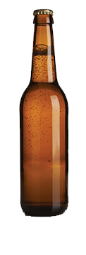

Our Brews
We have a large selection of unique and flavorful brews. We spend time perfecting every recipe to make sure each brew gives you an exceptional drinking experience.
Year Round Brews
These delicious beverages are available year round. Find them on tap or by the bottle at your favorite establishment.
Artemis Blonde
This goddess of a brew has mild notes of Warrior, Belma and Zythos with a delicate malt profile. It has a mild bitterness that is perfectly balanced with a touch of refreshing, honey-like sweetness. We used American Two-Row, Malted Wheat, German Vienna, and Dextrine Malt to perfectly complement the hops. This is a brew like no other.
By the numbers:
- OG: 10 degrees Plato
- ABV: 4.2%
- IBU: 25
Sacred Heart IPA
This brew pays homage to the past while redefining the future. It is balanced and bitter, tropical and satisfying. Featuring late additions of the new hop, Belma, Sacred Heart is then double dry hopped with Zythos and Centennial for a huge juicy flavor that will satisfy hopheads while maintaining approachability. We use a six step mash process to create a complex malt backdrop that highlights the hops.
By the numbers:
- OG: 18 degrees Plato
- ABV: 7.2%
- IBU: 75
Medusa Stout
By utilizing advanced mashing techniques rather than lactose sugar, we've created a stout that is reminiscent of a chocolate or milk stout, but that is suitable for the lactose intolerant. There is enough sweet chocolate flavor that many have sworn we cheated.
By the numbers:
- OG: 15 degrees Plato
- ABV: 5.2%
- IBU: 21
Warrior Heart IPA
We've made this West-Coast style IPA with fully twice the bittering hops of Sacred Heart. It's mashed at a lower temperature and brewed with the addition of invert sugar, which causes it to finish as a much drier and more bitter beer. Multiple late and dry hop additons of Warrior and Centennial give it an immensely grapefruity, piney, and dank hop character.
By the numbers:
- OG: 18 degrees Plato
- ABV: 7.2%
- IBU: 98
Seasonal Brews
These brews are only around for a season. Be sure to pick up plenty as they don't last.
Old Naps Scotch Ale
Somewhere between a scotch ale and a wee heavy, the mahogany body of this malty and complex ale is capped with a light tan head that gives off a toffee-like malt aroma combined with a subtle smokiness. We use a traditional scotch ale yeast strain from Edinburgh, and a very light touch of smoked malt to accentuate the smoky undertones of the yeast. The use of six different malts provides a rich and flavorful drinking experience that is perfect for a cold winter’s night. Available in winter
By the numbers:
- OG: 17 degrees Plato
- ABV: 6.6%
- IBU: 25
Frederick
Using only traditional ingredients, our Bavarian-style hefeweizen pays homage to the centuries-old brewing tradition in Bavaria. Utilizing 64% wheat malt in our grain bill, a traditional weissbier yeast, and a high fermentation temperature gives this beer a bready, fruity and complex character. Notes of banana, clove, and freshly baked bread caress the palate with an effervescent body that leads to a clean and dry finish. Available in spring.
By the numbers:
- OG: 13.5 degrees Plato
- ABV: 5.9%
- IBU: 23
Seven Seas Ale
This is a bright, clean and hoppy pale ale that utilizes the Falconer’s Flight “7 C’s” HopUnion proprietary hop blend to create an incredibly complex yet imminently sessionable pale. The perfect beer for hot summer months, Seven Seas maintains a balance between huge flavor and thirst-quenching crispness that is sure to have you reaching for one more. Available in summer.
By the numbers:
- OG: 14 degrees Plato
- ABV: 5.9%
- IBU: 31
Der Alte Fritz
The additions of chocolate malt and crystal malt, as well as rye malt, give this beer a distinctively complex malt character while maintaining both the subtle grainy spice that rye is prized for and the dry, husky robust grain character of a porter. We call it a “dark rye brown,” as no other description has seemed to yet work. Available in fall.
By the numbers:
- OG: 14 degrees Plato
- ABV: 5.3%
- IBU: 37
Novemberfest
The prevailing trend of late in the beer world has been to release “seasonal” beers sooner, ever sooner… most “Oktoberfest” Marzens being released in July or earlier. In adamant and flagrant disregard, even hostility towards this trend, we release Novemberfest in November… (and potentially again in March). This Marzen-style lager is nestled between a traditional Marzen and a German “festbier.” Slightly more golden in hue and with a lighter body than many Marzen style lagers, our Novemberfest still boasts a huge nutty malt profile, a bright German hop character, and a drinkability that is unmatched in the style.
By the numbers:
- OG: 14 degrees Plato
- ABV: 5.5%
- IBU: 14
Seasonal Imperial Brews
These delicious beverages take hops, malt, and ABV to new heights. Get them while they last - they only come around once a year.
Sacred Heartier
Everything you love about Sacred Heart, amplified. It remains balanced and bitter, tropical and satisfying. With extra additions of, Belma, Zythos, and Centennial, Sacred Heartier has a huge juicy flavor that hopheads will love.
By the numbers:
- OG: 10 degrees Plato
- ABV: 9.2%
- IBU: 84
Harlequin
Harlequin is our Imperial series offering for the holiday season from Halloween to Christmas. An imperial stout brewed with cocoa, vanilla, cinnamon, nutmeg, clove and ginger, this delectable treat has been befuddling and mesmerizing palates since its introduction. Only available for a limited time, so time, as they say, is of the essence.
By the numbers:
- OG: 19.5 degrees Plato
- ABV: 8.5%
- IBU: 41
Brutus
Pitch black in body, Brutus uses chocolate malt, roasted barley, and oatmeal to wreak havoc on your tastebuds. With a body thick enough to coat your palate, this combination of malts and hops will stay with you forever.
By the numbers:
- OG: 27.4 degrees Plato
- ABV: 11.5%
- IBU: 98
Limited Run Brews
These brews are a one run only series. Enjoy them while they last
Cyclops
These mythical brews are shrouded in mystery. Each release is a small batch, one time only beer. When they run out, they are never to be seen or heard from again. If you find one you love, enjoy it while it lasts.
The Finisher
This is one powerful brew. Featuring seven types of malts and Centennial hops, this brew is balanced out with brown sugar and honey for a full flavor. With plenty of bitter punch and higher ABV, this beer has earned its name.
By the numbers:
- OG: 36 degrees Plato
- ABV: 17.5%
- IBU: 91
Medusa Stout
By utilizing advanced mashing techniques rather than lactose sugar, we've created a stout that is reminiscent of a chocolate or milk stout, but that is suitable for the lactose intolerant. There is enough sweet chocolate flavor that many have sworn we cheated.
By the numbers:
- OG: 15 degrees Plato
- ABV: 5.2%
- IBU: 21
Warrior Heart IPA
We've made this West-Coast style IPA with fully twice the bittering hops of Sacred Heart. It's mashed at a lower temperature and brewed with the addition of invert sugar, which causes it to finish as a much drier and more bitter beer. Multiple late and dry hop additons of Warrior and Centennial give it an immensely grapefruity, piney, and dank hop character.
By the numbers:
- OG: 18 degrees Plato
- ABV: 7.2%
- IBU: 98